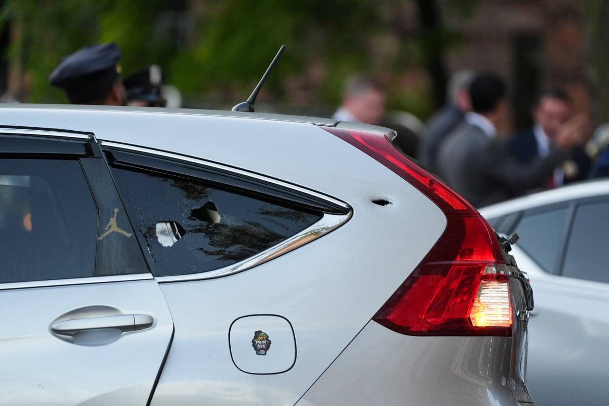
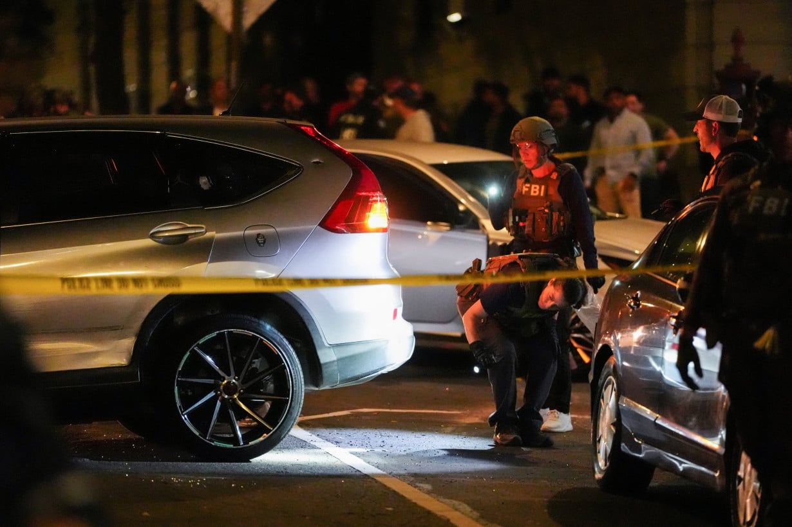
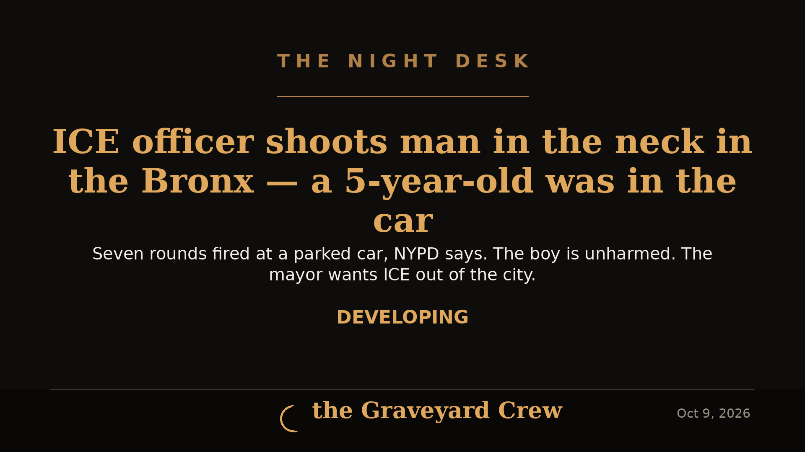

October 09, 2026
DEVELOPING: ICE Officer Shoots Man in Neck During Bronx Arrest — 5-Year-Old Boy in the Car



Photos: Reuters, via the LA Post; headline card by The Night Desk
What happened
BRONX, N.Y. — A federal immigration officer shot and wounded a man in his car Thursday afternoon in the Marble Hill neighborhood of the Bronx — with a 5-year-old boy sitting inside the vehicle, according to New York City's mayor, city police, and eyewitnesses.
The shooting happened around 4 p.m. ET, the Department of Homeland Security said.
The man, identified by city police as Oscar Belgal, 28, of the Dominican Republic, survived and was treated at a hospital, DHS said. He was hit below his left ear.
Two very different accounts of how it started
NYPD Commissioner Jessica Tisch said at a late-night news conference near the scene that Belgal was pulling into a parking space when a federal officer in plainclothes approached with a gun drawn, followed by another federal officer who also wasn't in uniform. Belgal started to pull the car forward — and then at least one of the officers fired seven rounds.
DHS described the operation differently in a statement: ICE officers were conducting a "targeted enforcement operation" to arrest a man with a grand larceny conviction and a history of other arrests.
"During the incident, an ICE officer discharged his weapon and the criminal illegal alien was injured," DHS said, adding that ICE officers rendered immediate aid. "The individual is alive and at a local hospital."
Tisch said Belgal had been arrested twice in New York City, in 2023 and 2025.
The boy
The 5-year-old was physically unharmed, the mayor said. Tisch said NYPD located the child with a family member after a wellness check.
"Early reports indicate agents surrounded (the man) and a 5-year-old child in his car before firing multiple rounds," Mayor Zohran Mamdani said in a statement.
A restaurant worker, Pedro Almarez, told Reuters by phone he heard the shots and went outside to see several officers wearing ICE attire. "There were a lot of ICE officers, three or four cars," he said — adding that the man was only removed from his car after an ambulance arrived. A woman on a balcony overlooking the taped-off block told officers they were "taking our children," according to a Reuters witness.
The political fallout
Mamdani called the shooting "unconscionable and incredibly serious" and said he spent the evening on the phone with President Trump and Homeland Security leadership negotiating Belgal's release — unsuccessfully. He demanded the administration end ICE enforcement actions in New York City.
"This city wants ICE out. We want ICE out of our city, ICE out of our schools, ICE out of our hospitals, ICE out of our streets, ICE away from our kids," Mamdani said.
He also said the federal officers surrounding the vehicle wore construction vests and masks, making it difficult to identify them as immigration officers.
The bigger picture
Reuters reports that federal immigration agents have shot at least 21 people since President Trump returned to office — 7 fatally — sparking protests across the country. Critics say the deportation push has produced an increasing number of violent confrontations, and accuse the administration of resisting accountability for the agents involved.
Friday, Oct. 9 — the fallout widens
New developments the day after the shooting, from Reuters, CNN, and USA Today:
- Homeland Security Secretary Markwayne Mullin defended the agents at a Friday press conference, said officers did not know the child was in the car, and blamed sanctuary policies. He accused Belgal of endangering both officers and the child.
- Two federal agents were injured in the encounter and have been treated and released, a law enforcement source told CNN.
- Belgal (spelled "Bergal" in some records) is being held in a detention facility outside New York state; ICE says it plans to remove him from the country. His attorneys filed a habeas corpus petition Friday, and a federal judge ordered he remain in the U.S. for now.
- Protests erupted: roughly 300 demonstrators gathered outside NewYork-Presbyterian Allen Hospital Thursday night, clashing with police; more demonstrations followed Friday in the Bronx.
- Body-camera and other video of the shooting has not been made public; Mullin said it would eventually be released.
This is a developing story. The Night Desk will update this article as new details are confirmed.
Source: Reuters — read the original report
← Back to latest stories